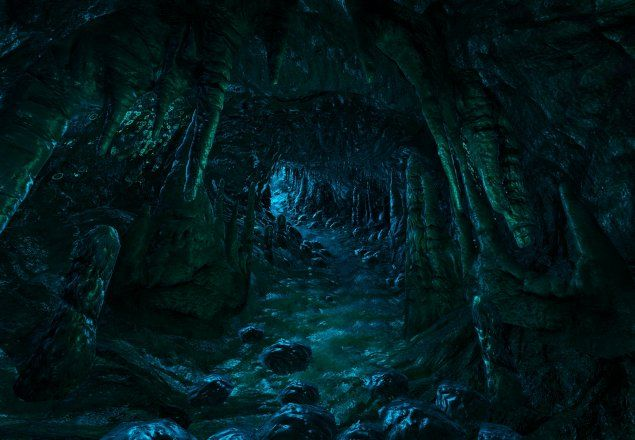

your mommy
Dungeons and Dragons, ou D&D, é um TTRPG (Table Top Roleplaying Game) onde um grupo de dois ou mais jogadores usam dados e a imaginação para criar histórias em mundos totalmente diferentes e quase infinitos, tudo depende de apenas uma pessoa para continuar a história.

D&D não possui realmente um objetivo "padrão" como algo que os jogadores devem achar ou matar, porque isso depende totalmente dos jogadores e do mestre, como por exemplo sobreviver em uma ilha deserta após o seu barco ter sido destruido pela própria natureza ou um monstro que subemergiu do fundo do mar e quebrou o humilde barco ao meio; ou talvez escapar de ua caverna onde você ficou preso depois da sua magia ter falhado, as possibilidades são infinitas.
 Como muitos outros TTRPGs, D&D também tem diferentes edições, e a mais famosa por enquanto é a 5° edição que é considerada uma das mais simples em todos os TTRPGs,
deixando mais pessoas interessadas nesse gênero de jogo e fazendo as regras do jogo bem modificáveis para todos os tipos de gostos, e sem contar que essa edição ainda está ganhando mais livros que adicionam mais conteúdo e aventuras pré-feitas.
O jogo funciona como muitos
jogos de tabuleiro, tendo um ou talvez mais jogadores como o mestres e o resto com o controle dos seus personagens, agindo e como eles e usando suas abilidades para
enfrentar os desafios a sua frente enquanto o mestre retorna reações realistas a situação, dando um sentimento de medo e tensão pois apenas um erro pode acabar matando o grupo inteiro.
Muitos aplicativos e websites como o Roll20 e D&D Beyond podem ajudar caso esteja jogando a distância,
ou até quando você tiver algumas dúvidas sobre as regras!